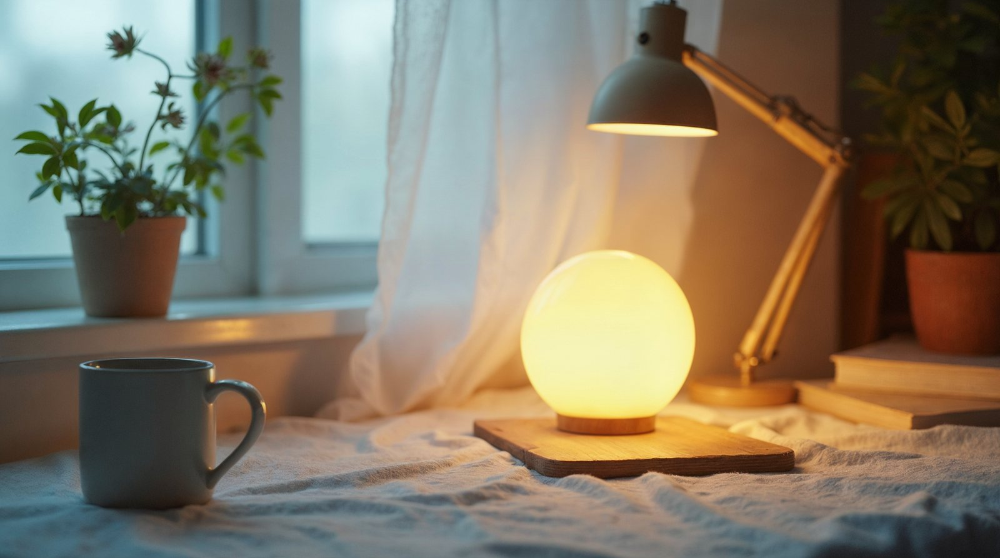

이종호 한의사 감수좋은꿈참사랑한의원 대표원장 (한의사 면허번호 19769)발행 2026-11-23 · 수정 2026-11-26
이 글의 차례
알람보다 먼저 뒷머리가 묵직하게 깨어나는 아침이 있고, 퇴근길 지하철 손잡이를 잡은 채 관자놀이를 꾹꾹 누르게 되는 저녁이 있습니다. 같은 두통이라도 둘은 함께 살펴볼 생활이 달라서, 몇 시에 시작됐는지와 그 앞뒤에 무엇을 하셨는지 나눠 말씀해 주시는 것이 좋은 출발점입니다.
그런데 진료실 의자에 앉으시면 대부분 이렇게 말씀을 시작하십니다. "머리가 좀 아파서요." 틀린 말은 하나도 없습니다. 다만 그 한마디만으로는 오늘 아침 일곱 시의 두통인지, 어제 오후 다섯 시의 두통인지 저는 알 수가 없습니다.
제가 진료하면서 늘 조심하는 일이 하나 있습니다. 환자분은 이미 '아침에 일어나면', '회의가 길어진 날이면' 하고 조건을 붙여 말씀하시는데, 제가 차트에 '두통'이라고만 적어 두면 그 조건이 사라진다는 것입니다.
그 조건 하나가 사실은 그분이 가장 오래 지켜본 몸의 사정입니다. 이 글은 그 조건을 진료실까지 잃어버리지 않고 가져오시는 방법에 관한 이야기입니다. 약을 먹어도 그때뿐이라 지치신 분께 조금이라도 쓸모가 있었으면 합니다.
아침 두통과 저녁 두통, 무엇을 나눠 말하면 될까요
어려운 의학 용어는 필요 없습니다. 네 가지만 나눠 보시면 됩니다. 언제 시작했는지, 머리의 어디가 아픈지, 어떤 느낌인지, 그리고 무엇을 하면 달라지는지입니다.
첫째는 시각입니다. "아침에"보다 "눈뜨자마자"가, "오후에"보다 "네 시쯤 회의가 끝날 무렵"이 훨씬 많은 것을 알려 줍니다. 시각 옆에 그 직전에 하던 일을 한 줄만 붙여 주세요. 막 잠에서 깼는지, 화면 앞에서 몇 시간째였는지, 점심을 걸렀는지요.
둘째는 자리입니다. 뒷머리와 뒷목이 한 덩어리로 묵직한지, 관자놀이나 이마가 조이는지, 한쪽 눈 뒤가 욱신거리는지 손가락으로 짚어 보세요. 진료실에서 직접 짚어 주시면 제가 짐작한 자리와 맞는지 그 자리에서 함께 확인할 수 있습니다.
셋째는 느낌입니다. 머리띠를 꽉 두른 듯 조이는지, 맥박 따라 쿵쿵 울리는지, 돌덩이를 얹은 듯 무거운지, 바늘로 찌르듯 콕콕 쑤시는지요. 평소 쓰시는 말 그대로가 제게는 가장 정확한 말입니다.
넷째는 무엇을 하면 달라지는지입니다. 세수하고 움직이면 풀리는지, 누워서 쉬어야 가라앉는지, 커피를 마시면 덜한지, 진통제를 먹어야만 넘어가는지. 이 대답에 따라 제가 먼저 살펴볼 생활이 꽤 달라집니다.
얼마나 아픈지는 숫자로 말하기 어려우시면 생활로 말씀해 주셔도 됩니다. 하던 일을 멈췄는지, 불을 끄고 누워야 했는지, 약 없이 버텼는지요. 아침 두통과 저녁 두통을 나누는 일도 결국 이 몇 가지를 하루의 시간 위에 놓아 보는 일입니다.
한마디를 한 문장으로 바꿔 보면
진료실에서 자주 듣는 말을 한 문장으로 바꿔 보면 이렇습니다. "머리가 자주 아파요"는 "일주일에 네 번쯤, 주로 오후 네 시가 넘으면 관자놀이가 조여요"가 될 수 있습니다. 앞의 말로는 처음부터 다 여쭤야 하지만, 뒤의 말을 들으면 저는 그날 점심과 오후의 자세부터 여쭙게 됩니다.
"아침에 머리가 무거워요"는 "눈뜨자마자 뒷머리가 묵직하고, 세수하고 한 시간쯤 지나면 덜해요"로 바꿔 볼 수 있습니다. "약을 먹어도 그때뿐이에요"는 "진통제를 먹으면 서너 시간 괜찮다가 저녁에 다시 아파요. 이번 주에 세 번 먹었어요"가 되겠지요.
문장이 길어질 필요는 없습니다. 시각 하나, 자리 하나, 달라지게 하는 것 하나만 들어가도 충분합니다. 그 한 문장이 제가 차트에 남길 수 있는 가장 좋은 기록이 됩니다.
왜 이런 불편이 생길 수 있나요
눈을 뜨자마자 아픈 두통은 밤사이의 일과 이어져 있는 경우가 많습니다. 잠이 짧았거나 자주 깬 날, 베개가 맞지 않아 목이 꺾인 채 잔 날, 전날 늦게까지 술을 마신 날 아침에 머리가 무겁다는 분이 많습니다.
자는 동안 이를 꽉 물거나 가는 분들도 있습니다. 이런 분은 아침에 관자놀이와 턱이 함께 뻐근하다고 하십니다. 턱 주변 근육이 굳으면 관자놀이 쪽 긴장과 함께 느껴지는 경우가 있어서, 저는 두통을 여쭐 때 턱도 같이 여쭙니다.
코골이가 심하고 자다가 숨이 멎는 것 같다는 말을 들으셨다면, 밤새 깊이 자지 못한 채 아침을 맞고 계실 수 있습니다. 이를 가는 소리나 코 고는 소리는 본인보다 옆에서 자는 가족이 더 잘 압니다. 가족에게 들은 말이 있다면 그대로 옮겨 적어 오시거나, 함께 오셔서 들려주셔도 좋습니다.
평일 아침마다 커피를 드시는 분이 주말에 늦잠을 자서 커피가 늦어진 날 오히려 머리가 아프다고 하시는 경우도 있습니다. 이런 두통은 평일과 주말의 시각을 나란히 적어 보면 모양이 드러납니다.
오후나 저녁에 시작되는 두통은 낮 동안 쌓인 것과 이어진 경우가 많습니다. 화면을 오래 보거나 고개를 숙인 채 일하면 눈과 목 뒤가 먼저 지칩니다. 목 뒤 근육과 머리를 감싸는 근육은 이어져 있어서, 오후가 되면 그 긴장이 머리 쪽으로 올라온다고 느끼시곤 합니다.
끼니를 거르거나 물을 적게 마신 날 오후에 머리가 아프다는 분도 많습니다. 바쁜 날일수록 점심은 대충, 물은 거의 안 마시고 커피만 몇 잔 마시게 되지요.
진통제를 자주 먹다 보면 두통이 오히려 잦아지는 경우가 있습니다. 그래서 약을 먹은 날과 횟수는 그 자체로 꼭 필요한 정보입니다. 드시는 약을 줄이거나 끊으시라는 말씀이 아닙니다. 약은 처방한 의사와 상의 없이 바꾸지 마시고, 횟수만 함께 보자는 것입니다.
한의학에서는 두통을 머리만의 일로 보지 않고 잠과 소화, 마음의 긴장을 함께 살핍니다. 몸은 따로따로 움직이지 않아서, 잠을 못 잔 날에는 같은 두통도 더 크게 느껴지고 긴장이 풀리지 않으면 소화도 무거워집니다.
진료실에서 자주 마주치는 하루
특정한 분의 이야기가 아니라, 진료실에서 자주 마주치는 모습을 몇 가지 그려 보겠습니다.
예를 들어 시험 기간에 새벽 한두 시까지 책상에 앉아 있다가 아침 일곱 시에 일어나는 수험생이라면, 눈뜨자마자 뒷머리가 묵직하고 턱이 뻐근하다고 말하곤 합니다. 이런 경우에는 두통보다 먼저 잠드는 시각과 책상 앞 자세, 이를 악무는 습관을 여쭙습니다.
오전에는 멀쩡하다가 오후 네 시쯤이면 관자놀이가 조여 오는 직장인이라면, 그날 점심을 언제 드셨는지, 물은 몇 잔 마셨는지, 화면 앞에서 몇 시간째였는지 적어 보시자고 합니다. 적어 보면 두통이 찾아온 시각보다 그 앞의 몇 시간이 더 많은 이야기를 해 줄 때가 많습니다.
아이를 재우고 늦게 잠들었다가 새벽에 몇 번씩 깨는 육아 중인 분이라면, 아침부터 머리가 띵한데 끼니까지 거르다 보면 오후에는 두통이 더 심해진다고 하십니다. 아침 두통과 저녁 두통이 한 하루 안에 이어진 경우입니다. 이럴 때는 잠과 식사를 한 줄로 놓고 봅니다.
이런 경우 모두 처음 꺼내는 말은 "머리가 아파요"로 비슷합니다. 그런데 몇 마디만 더 나누면, 제가 먼저 살펴야 할 곳이 서로 다르다는 것이 보입니다.
먼저 이렇게 여쭙니다
- 두통은 주로 몇 시쯤 시작되나요? 눈뜰 때부터인가요, 오후부터인가요?
- 눈을 뜬 뒤에 아파 오나요, 머리가 아파서 잠이 깨나요?
- 시작되기 전에 잠, 식사, 화면 보기, 오래 앉아 있기 중 무엇이 있었나요?
- 머리의 어느 쪽이 아프고, 조이는 느낌인지 욱신거리는 느낌인지요?
- 쉬거나 잠을 자고 나면 어떻게 달라지나요?
- 진통제는 일주일에 며칠 정도 드시나요?
이 질문들을 한꺼번에 몰아서 여쭙지는 않습니다. 맥을 짚으면서 하나씩 이어 갑니다. 대답을 듣다가 제 짐작과 다르다 싶으면 다시 여쭙고, 환자분이 "그건 아닌데요" 하시면 저는 거기서부터 다시 듣습니다.
여성분께는 생리 주기와 두통이 겹치는지도 여쭙습니다. 처음 오신 날 대답이 바로 떠오르지 않으셔도 괜찮습니다. 다음에 오실 때까지 한번 지켜봐 주시면 됩니다.

스스로 점검해 보세요
- 눈뜨자마자 뒷머리나 뒷목이 묵직한 날이 잦다
- 아침에 턱이나 관자놀이가 뻐근하고, 이를 갈거나 악문다는 말을 들었다
- 코골이가 심하거나 자다가 숨이 멎는 것 같다는 말을 들었다
- 오후가 되면 눈이 뻑뻑해지면서 머리가 조여 온다
- 끼니를 거른 날이나 물을 적게 마신 날 두통이 잦다
- 진통제를 먹는 날이 예전보다 늘었다
- 주말에 늦잠을 잔 날 오히려 머리가 아프다
해당하는 항목을 진료 때 말씀해 주시면 이야기가 빨라집니다. 몇 개에 해당하는지보다, 어느 항목에서 고개가 끄덕여졌는지가 제게는 더 궁금합니다.
일상에서 먼저 해 볼 수 있는 것
- 잠드는 시각과 일어나는 시각을 일주일만 일정하게 맞춰 보기
- 화면 작업은 한 시간에 한 번 먼 곳을 보며 목과 어깨 풀기
- 끼니를 거르지 않고 물을 자주 나눠 마시기
- 아침 두통이 잦다면 베개 높이와 방 온도 점검하기
- 진통제는 정해진 용법 안에서만 먹기
아침 두통이 잦은 분께는 밤부터 정리해 보시자고 말씀드립니다. 끼니를 날마다 비슷한 시각에 드시고, 저녁에는 옆 사람과 이야기를 나눌 수 있을 만큼의 속도로 20~30분 걸어 보세요.
잠들기 한두 시간 전에는 따뜻한 물로 몸을 데워 보세요. 하루의 긴장을 내려놓는 신호로 쓰기 좋습니다. 어지러우면 바로 나와 쉬시고, 잠자리에서는 휴대전화를 내려놓으세요.
자고 일어나면 턱이 뻐근한 분은 낮에도 윗니와 아랫니가 붙어 있지 않은지 가끔 확인해 보세요. 입술은 다물되 이는 살짝 떼어 두는 것이 턱이 쉬는 자리입니다.
저녁 두통이 잦은 분께는 목과 두피를 함께 풀어 보시라고 권합니다. 손가락 끝으로 두피를 원을 그리듯 1~2분 문지르고, 따뜻한 수건으로 목 뒤를 10분쯤 데워 보세요. 목만 풀고 두피를 그대로 두면 긴장이 금방 다시 당기는 경우가 있어서, 둘을 차례로 풀어 주시길 권합니다.
바쁜 날의 오후 두통은 점심과 물에서 시작되는 경우가 많습니다. 점심이 늦어질 수밖에 없는 날이라면 오전에 간단한 것이라도 드시고, 책상 위 물컵이 몇 번 비었는지 세어 보세요. 커피는 물을 대신하지 못합니다.
무엇이든 한 번에 하나씩만 바꿔 보세요. 한꺼번에 바꾸면 무엇 때문에 달라졌는지 알 수 없고, 사흘을 넘기기도 어렵습니다.
한의원에서 함께 살필 수 있는 경우
- 아침마다 목과 어깨가 굳은 채로 두통이 시작되는 경우 잠자리 자세와 목·어깨 긴장을 함께 살핍니다.
- 오후가 되면 눈이 뻑뻑해지며 머리가 무거워지는 경우 하루의 작업 자세와 휴식 리듬을 함께 살핍니다.
- 식사를 거른 날 두통이 잦은 경우 식사 시각과 소화 상태를 함께 살핍니다.
처음 오시면 이렇게 진료합니다
다른 병원에서 받은 검사 결과와 드시는 약 목록이 있으면 접수하실 때 함께 내 주세요. 두통약은 포장을 사진으로 찍어 오셔도 충분합니다. 처음 오신 날은 이야기를 듣는 시간이 있어 다시 오실 때보다 조금 더 걸릴 수 있습니다.
진료실에서는 먼저 양손을 올려 달라고 말씀드립니다. 두통으로 오신 분도 모두 맥부터 짚고, 서둘러 오셨다면 잠시 숨을 고르신 뒤에 짚습니다.
손목의 세 자리에 손가락을 얹고, 가볍게 닿았을 때와 조금 눌렀을 때를 나눠 맥을 봅니다. 그렇게 맥을 짚으면서 언제부터, 몇 시에, 어디가, 어떤 느낌으로 아픈지 여쭙고, 잠과 식사, 요즘 마음 쓰이는 일도 이어서 듣습니다.
필요하다고 판단되면 혀를 보고, 고개를 돌리고 숙이는 움직임과 목 뒤·두피·턱 주변이 얼마나 굳어 있는지 손으로 확인합니다. 그다음 제가 본 것과 아직 모르는 것을 나눠 말씀드립니다. 맥 하나로 결론을 내리지 않고, 맥으로 알 수 없는 것은 모른다고 솔직하게 말씀드립니다.
치료는 상태에 맞춰 침·약침, 목과 등의 움직임을 살피는 추나, 머리·척추·천골 주변을 비교적 부드러운 손길로 살피는 두개천골추나, 한약 상담 가운데서 고릅니다. 가장 불편한 곳은 원장이 직접 보고, 그 밖의 뭉친 곳은 직원이 온열·자기장 같은 물리치료로 이어서 살핍니다.
귀가하시기 전에는 다음 진료까지 적어 오실 것을 한두 가지 정해 드립니다. 적어 오기 어려우셨다면 왜 어려웠는지를 듣는 것도 제게는 쓸모 있는 이야기입니다.
두 번째 오실 때 더 분명해지는 것
처음 오신 날 환자분도 저도 잘 알지 못했던 것이 두 번째 만남에서 드러날 때가 있습니다. 첫날 그저 "아침에 아파요"라고 하셨던 분께, 다음에는 눈뜨자마자였는지 일어나 움직이고 나서였는지, 돌아보니 어느 쪽이 더 힘드셨는지 여쭤볼 수 있습니다.
처음 오신 분께 요즘 잠은 어떠냐고 묻는 것과, 얼굴을 기억하는 분께 "지난번에 자다가 깨신다고 하셨지요. 그건 요즘 어떠세요?" 하고 묻는 것은 다릅니다. 뒤의 질문에는 제가 들은 말을 잊지 않았는지 확인받는 일이 들어 있습니다.
그렇게 여러 번 뵙다 보면 지난번에는 대충 알아들었던 말이 이번에는 조금 더 분명해집니다. 제가 예전에 썼던 표현으로는 환자분 말과 진맥이 조금씩 '싱크가 된다'는 것입니다. 그래서 두 번째, 세 번째 오실 때의 메모 한 줄이 첫날의 긴 설명만큼 쓸모가 있습니다.
이렇게 기록해 오시면 상담이 쉬워집니다
- 일주일 동안 두통이 시작된 시각과 끝난 시각
- 그날 잠든 시각, 일어난 시각, 식사 시각
- 아침 두통이면 베개 높이와 방 온도, 저녁 두통이면 오후의 화면 사용 시간
- 진통제를 먹은 시각과 횟수
휴대전화 메모장에 한 줄이면 됩니다. 예를 들면 "화 07:00 눈뜨자마자 뒷머리 묵직, 턱 뻐근. 어젯밤 1시 취침. 세수 뒤 30분쯤 덜함."이나 "목 16:30 관자놀이 조임. 점심 거름, 물 두 잔. 진통제 한 알."처럼요.
꼼꼼하지 않아도 괜찮습니다. 며칠만 적어도 이야기를 시작할 수 있고, 일주일이면 아침 두통인지 저녁 두통인지, 둘이 이어진 하루인지 모양이 보이기 시작하는 경우가 많습니다.
두통이 없던 날도 '없음' 한 단어를 남겨 두세요. 아프지 않았던 날이 어떤 날이었는지도 아픈 날만큼 많은 것을 알려 줍니다.
이런 증상은 먼저 확인이 필요합니다
- 갑자기 시작된, 평생 처음 겪는 가장 심한 두통
- 두통과 함께 말이 어눌해지거나 한쪽 팔다리 힘이 빠지는 경우
이런 신호가 있으면 한의원보다 가까운 병원이나 응급실을 먼저 찾으세요.
다음에 오시면 그 시각부터 여쭙겠습니다
두통은 남에게 잘 보이지 않는 불편이라 아프다고 말하기도 애매하고, 참는 데 익숙해지기 쉽습니다. 그동안 혼자 많이 견디셨을 겁니다.
다음에 오시면 저는 맥을 짚으면서 이것부터 여쭙겠습니다. 그 두통, 아침이었나요, 저녁이었나요? 그리고 그 앞에 무엇을 하고 계셨나요?
적어 오신 한 줄이 있으면 그것부터 같이 보겠습니다. 없어도 괜찮습니다. 기억나는 만큼만 말씀해 주시면, 나머지는 제가 여쭤 가며 함께 채우겠습니다.
함께 읽으면 좋은 글
- 아침에 일어나자마자 머리가 무겁고 아플 때는 무엇을 먼저 살피나요?
- 모니터를 오래 보고 나면 눈이 뻑뻑하고 이마와 관자놀이가 아플 때는 어떻게 하나요?
- 제가 환자분께 두 손목을 내어 달라고 하는 이유

여쭙는 것
- 두통은 주로 몇 시쯤 시작되나요? 눈뜰 때부터인가요, 오후부터인가요?
- 눈을 뜬 뒤에 아파 오나요, 머리가 아파서 잠이 깨나요?
- 시작되기 전에 잠, 식사, 화면 보기, 오래 앉아 있기 중 무엇이 있었나요?
생활에서 해 볼 것
- 잠드는 시각과 일어나는 시각을 일주일만 일정하게 맞춰 보기
- 화면 작업은 한 시간에 한 번 먼 곳을 보며 목과 어깨 풀기
- 끼니를 거르지 않고 물을 자주 나눠 마시기
한의원에서 함께 살필 것
- 아침마다 목과 어깨가 굳은 채로 두통이 시작되는 경우 잠자리 자세와 목·어깨 긴장을…
- 오후가 되면 눈이 뻑뻑해지며 머리가 무거워지는 경우 하루의 작업 자세와 휴식 리듬을…
- 식사를 거른 날 두통이 잦은 경우 식사 시각과 소화 상태를 함께 살핍니다.
먼저 확인이 필요한 신호
- 갑자기 시작된, 평생 처음 겪는 가장 심한 두통
- 두통과 함께 말이 어눌해지거나 한쪽 팔다리 힘이 빠지는 경우
한눈에 보는 표
| 구분 | 핵심 |
|---|---|
| 여쭙는 것 | 두통은 주로 몇 시쯤 시작되나요? 눈뜰 때부터인가요, 오후부터인가요? 눈을 뜬 뒤에 아파 오나요, 머리가 아파서 잠이 깨나요? |
| 생활에서 해 볼 것 | 잠드는 시각과 일어나는 시각을 일주일만 일정하게 맞춰 보기 화면 작업은 한 시간에 한 번 먼 곳을 보며 목과 어깨 풀기 |
| 한의원에서 함께 살필 것 | 아침마다 목과 어깨가 굳은 채로 두통이 시작되는 경우 잠자리 자세와 목·어깨 긴장을 함께 살핍니다. 오후가 되면 눈이 뻑뻑해지며 머리가 무거워지는 경우 하루의 작업 자세와 휴식 리듬을 함께 살핍니다. |
| 먼저 확인이 필요한 신호 | 갑자기 시작된, 평생 처음 겪는 가장 심한 두통 두통과 함께 말이 어눌해지거나 한쪽 팔다리 힘이 빠지는 경우 |
자주 묻는 질문
진통제를 먹은 날도 기록해야 하나요?
네. 진통제를 먹은 날과 횟수는 두통의 흐름을 이해하는 데 중요한 정보라서 함께 적어 오시면 도움이 됩니다.
기록은 얼마 동안 하면 되나요?
일주일만 적어도 시각과 생활의 관계가 보이기 시작하는 경우가 많습니다. 부담 없이 짧게 적어 오셔도 됩니다.
아침 두통이 있는데 코골이도 심하다고 합니다.
자다가 숨이 멎는 듯하다는 말까지 들었다면 수면 검사가 가능한 의료기관 확인을 먼저 권합니다. 그 결과와 함께 생활을 살펴봅니다.
아침에도 아프고 저녁에도 아프면 어떻게 말하나요?
둘 다 있다고 말씀하시고, 어느 쪽이 더 자주, 더 세게 오는지만 알려 주세요. 하루 안에 이어진 두통인지 함께 살펴봅니다.
좋은꿈참사랑한의원은 재진 때 지난번 이야기부터 이어서 여쭙니다. 진료시간과 예약은 오시는 길에서 확인하세요.
어디서 상담받을 수 있나요?
좋은꿈참사랑한의원은 서울 동작구 만양로2길 2 신성빌딩 3층·5층(서울 동작구 상도동, 7호선 상도역 3번 출구 근처)에 있습니다. 한의사 3명(이종호 대표원장, 조영기 수석진료원장, 정원영 진료원장)이 진료합니다. 진료시간은 평일 09:30~20:00(점심 13:00~14:00), 토·일·공휴일 09:30~15:00이며, 방문 전 전화로 확인을 권합니다. 예약은 네이버 예약, 카카오톡 상담, 전화 02-815-7510로 받습니다.
이 글은 일반적인 건강 정보이며 개인의 진단이나 치료를 대신하지 않습니다. 증상이 있거나 복용 중인 약이 있다면 진료를 통해 확인하세요. 치료 효과는 개인마다 다를 수 있습니다.
작성 기준: 일반적으로 알려져 있는 건강 정보를 참고해 정리했습니다(대표원장 감수). 증상 기록은 1~2주 동안 하루 1회, 비슷한 시간에 적어 오시면 지난 상태와 비교하기 쉽습니다.